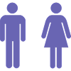

INTERVIEW
若手社員インタビュー
株式会社加山組では、「建築で生きていく」覚悟と誇りをともにできる仲間を募集しています。
現場を動かす技術者や監督、お客様に寄り添う営業。多様な職種の社員が、それぞれの思いを持って日々の仕事に向き合っています。
新卒6年目 鈴木さん
事務職
営業部
新卒6年目 鈴木さん
事務職
営業部
Q.業務内容を教えてください
営業部では、お客様との打ち合わせや工事提案、見積作成、契約手続きなどを担当しています。現場とオフィスをつなぐ役割なので、誰とでも円滑にコミュニケーションを取ることを意識しています。
Q.印象に残っている業務はありますか？
入社してすぐに担当したオフィスビルの契約です。何度もお客様と話し合いを重ね、無事に契約が決まったときは、嬉しさとやりがいを同時に感じました。
Q.どんな人と働きたいですか？
落ち着いていて、周りを気遣える方と一緒に働きたいです。協力し合いながら仕事を進められる人だと心強いですね。
新卒4年目 柴田さん
技術職
施工管理部
新卒4年目 柴田さん
技術職
施工管理部
Q.業務内容を教えてください
施工管理部で、建築現場の工程や安全、品質管理を担当しています。現場全体を見ながら、協力会社やお客様とやり取りし、建物が計画通りに完成するよう指揮を取る仕事です。
Q.印象に残っている業務はありますか？
大規模商業施設の現場監督を任されたときですね。最初は緊張しましたが、チームと協力して完成させた瞬間の達成感は忘れられません。
Q.どんな人と働きたいですか？
明るく前向きで、自分から考えて行動できる人。チームのことも考えながら動ける人だと、一緒に働きやすいです。
中途3年目 金澤さん
技術職
設備技術部
中途3年目 金澤さん
技術職
設備技術部
Q.業務内容を教えてください
設備技術部で、建物内の電気・空調・衛生設備の設計や施工管理を行っています。現場での施工確認やトラブル対応も担当し、建物の「動く部分」を支える仕事です。
Q.印象に残っている業務はありますか？
入社して間もない頃に担当した大規模オフィスビルの電気設備工事です。設計通りに施工するのが難しく、冷静に対応策を考えて現場に反映させたことが印象に残っています。
Q.どんな人と働きたいですか？
好奇心があって、自分で考えて動ける方。設備は変化が多いので、柔軟に対応できる人だと助かります。
COMPANY DATA
数字で見る、加山組
平均年収
650万円
平均残業時間
21時間/月
年間休日
122日
2024年度実績
男女比

7:3
平均勤続年数
13.5年
有給取得率
98%
平均有給取得日数：11日
Q&A
よくあるご質問
Q どんな職種を募集していますか？
A 当社では、技術職と事務職の2つの職種で募集を行っています。
技術職は、建築現場でプロジェクトを動かす仕事で、施工管理や現場監督として工程・安全・品質の管理を担当します。
事務職は、主にオフィスで勤務し、総務・経理・営業・工務事務などを通して会社と現場を支えるポジションです。
書類作成やデータ管理、各部署のサポート業務などを行い、組織全体の円滑な運営を支えます。
Q 配属先はどのように決まりますか？
A 本人の希望と適性、会社の事業状況を踏まえて決定します。転勤が発生する場合は事前に相談します。
Q 未経験でも応募できますか？／資格が必要ですか？
A 未経験の方も歓迎しています。教育制度や先輩のサポート体制が整っているため、基礎からしっかり学べます。
また、資格に関しても、入社時点では必須ではありません。必要な資格は会社のサポートで取得できます。